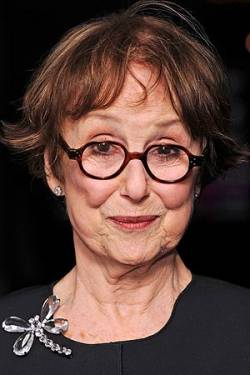
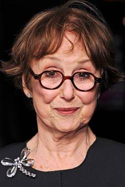

Actori principali
Benedict Cumberbatch
Actor | Producer | Soundtrack
Actor | Producer | Soundtrack
Benedict Timothy Carlton Cumberbatch (Sherlock Holmes) este un actor de teatru, radio, film, televiziune și producător englez, cunoscut pentru rolul lui Alan Turing din The Imitation Game, pentru care a fost nominalizat la Premiile Oscar, Globul de Aur, BAFTA și altele la categoria Cel mai bun actor.
Un alt rol remarcabil recreat de acesta este cel de Sherlock Holmes în seria Sherlock sau cel de Stephen Strange in filmul Marvel Doctor Strange.
Martin Freeman
Actor | Writer | Producer
Actor | Writer | Producer
Martin John Christopher Freeman (Dr. Watson) este un actor englez.
Este cel mai bine cunoscut pentru rolul lui Tim Canterbury din serialul britanic The Office, ca Dr. Watson în Sherlock sau ca Bilbo Baggins din trilogia lui Peter Jackson, Hobbitul.
Mark Gatiss
Actor | Writer | Producer

Actor | Writer | Producer
Mark Gatiss (Mycroft Holmes) este un actor, comediant, scenarist, regizor, producător și romancier englez.
Lucrările sale includ scrierea și interpretarea în serialele de televiziune Doctor Who, Sherlock și Dracula. Împreună cu Reece Shearsmith, Steve Pemberton și Jeremy Dyson, este membru al echipei de comedie The League of Gentlemen.
A jucat Tycho Nestoris în seria HBO Game of Thrones.
Louise Brealey
Actress | Writer | Producer
Actress | Writer | Producer
Louise Brealey (Molly Hooper), creditată și sub numele de Loo Brealey, este o actriță, scriitoare și jurnalistă engleză.
A jucat rolul lui Molly Hooper în Sherlock, Cass în spate, profesorul scoțian Jude McDermid în Clique, Gillian Chamberlain în A Discovery of Witches și Donna Harman în Death in Paradise.
Andrew Scott
Actor | Producer | Soundtrack
Actor | Producer | Soundtrack
Andrew Scott (Moriarty) este un actor irlandez.
A obținut recunoașterea pe scară largă pentru că a jucat rolul lui Jim Moriarty în serialul Sherlock de la BBC, rol care i-a adus premiul BAFTA Television pentru cel mai bun actor în rol secundar.
Scott este, de asemenea, cunoscut pentru rolul de preot în cea de-a doua serie Fleabag, pentru că a primit o nominalizare la Premiul Globul de Aur pentru cel mai bun actor în rol secundar - Serial, miniserie sau film de televiziune și a câștigat Premiul Critics 'Choice Television pentru cel mai bun actor în rol secundar dintr-o serie de comedie.
Una Stubbs
Actress | Soundtrack | Music

Actress | Soundtrack | Music

Una Stubbs (Doamna Hudson) este o actriță engleză, personalitate de televiziune și fostă dansatoare care a apărut la televiziunea britanică și la teatru și mai rar în filme.
Alte roluri de televiziune bine cunoscute includ mătușa Sally în Worzel Gummidge și Miss Bat în The Worst Witch.
Mai recent, ea a apărut ca gazdă a lui Sherlock Holmes, doamna Hudson, în seria de televiziune premiată BAFTA Sherlock.
Amanda Abbington
Actress
Actress
Amanda Abbington (Mary Morstan) este o actriță engleză.
Este cunoscută mai ales pentru rolul de Miss Mardle în Mr Selfridge și Mary Watson în adaptarea de la BBC a lui Sherlock.
Lara Pulver
Actress | Soundtrack
Actress | Soundtrack
Lara Pulver (The Woman) este o actriță engleză.
A interpretat-o pe Erin Watts în drama spionajului BBC Spooks și pe Irene Adler în adaptarea TV Sherlock a BBC.
A câștigat Premiul Olivier 2016 pentru cea mai bună actriță în rol secundar într-un musical în revigorarea West End a musicalului de succes Broadway Gypsy.
Sian Brooke
Actress
Actress
Sian Brooke (Eurus Holmes) este o actriță britanică, cunoscută pentru faptul că o interpretează pe Laura în All About George, Lori în Cape Wrath și Eurus Holmes în Sherlock.